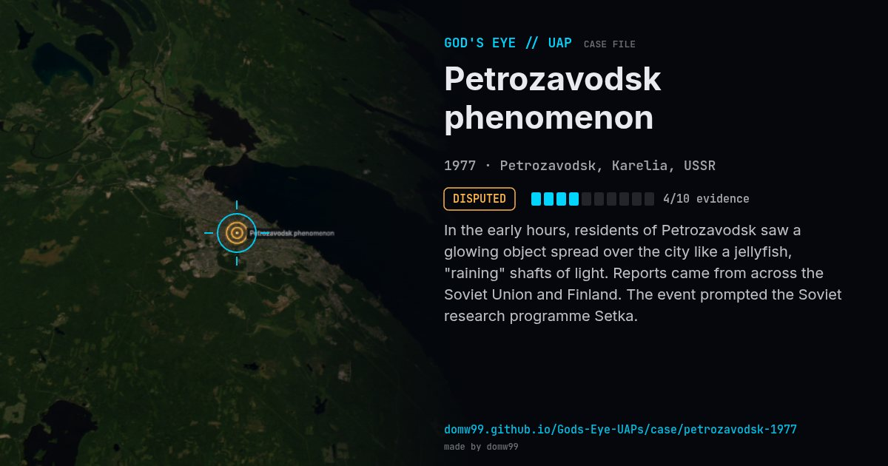

Petrozavodsk phenomenon
DISPUTED

In the early hours, residents of Petrozavodsk saw a glowing object spread over the city like a jellyfish, "raining" shafts of light. Reports came from across the Soviet Union and Finland. The event prompted the Soviet research programme Setka.
Explanation
Usually attributed to the launch of Kosmos-955 from Plesetsk, but the 1977 Academy of Sciences report said the phenomenon could not be satisfactorily understood.
What was seen
Shape: Glowing "jellyfish" showering rays
Witnesses: Thousands, from Helsinki to Vladivostok
Duration: ~12 minutes over Petrozavodsk
Browse
- Russia
- 1970s
- Disputed
- Mass sightings
- Official government documents
- Many independent witnesses
- Radar tracking
- Lights and fireballs